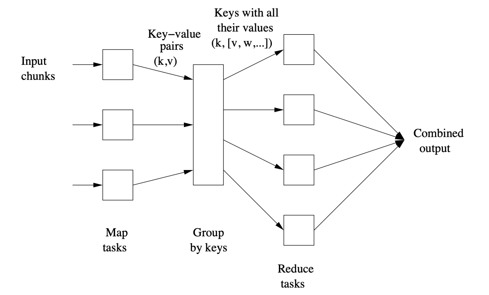
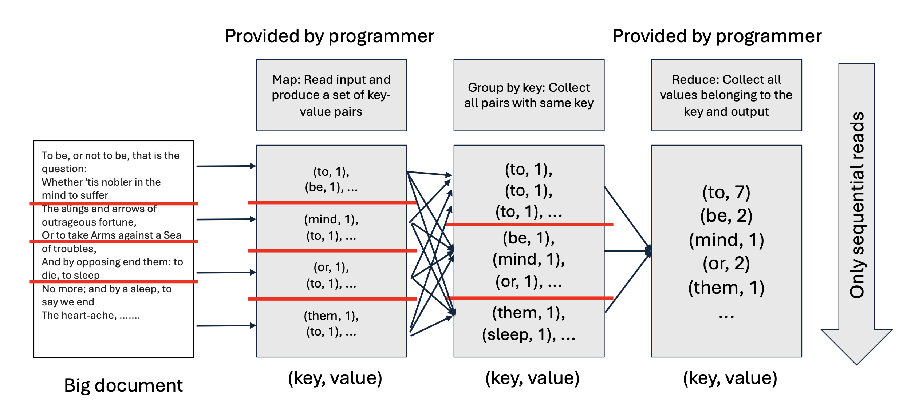
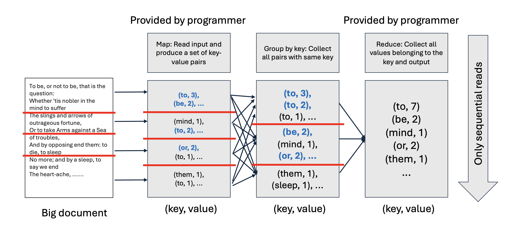

1. Introduction
- 지난 [Part 1] 포스트에서는 왜 우리가 분산 컴퓨팅을 필요로 하는지, 그리고 HDFS와 같은 인프라가 어떻게 데이터를 저장하는지 살펴보았습니다.
- 하지만 개발자 입장에서 수천 대의 서버에 일일이 데이터를 보내고, 장애를 처리하고, 통신을 제어하는 코드를 짜는 것은 불가능에 가깝습니다. MapReduce는 이러한 복잡한 하부 구조(Hardware failure, Data management)를 추상화(Abstraction)하여, 개발자가 오직 “계산 로직(Computation Logic)”에만 집중할 수 있게 해주는 프로그래밍 모델입니다.
- 이번 포스트에서는 MapReduce의 핵심 컴포넌트와 동작 원리를 Word Count 예제를 통해 상세히 알아보고, 성능 최적화를 위한 Combiner 개념을 다룹니다.
2. MapReduce Components
- MapReduce는 거대한 데이터를 처리하는 과정을 크게 Map, Group by Key, Reduce의 세 단계로 나눕니다. 개발자는 이 중 Map과 Reduce 두 가지 함수만 작성하면 됩니다. 나머지 복잡한 데이터 이동(Shuffle)은 시스템이 알아서 처리합니다.

2.1. Map Task
- Input: 데이터 청크(Chunk)의 각 요소(Element).
- 입력은 기본적으로 Key-Value 쌍이지만, 초기 단계에서는 Key를 무시하는 경우가 많습니다 (예: 텍스트 라인).
- Function: 사용자가 정의한
Map함수를 각 입력 요소에 적용합니다. - Output: 0개 이상의 새로운 Key-Value 쌍 (\((k, v)\))을 생성합니다.
- 이 단계에서의 출력은 디스크가 아닌 메모리 버퍼나 로컬 임시 파일에 기록됩니다.
2.2. Group by Key (Shuffle & Sort)
- 이 단계는 프로그래머가 아닌 MapReduce 시스템(Master Controller)이 수행하는 “마법”과 같은 단계입니다.
- Role: Map 단계에서 쏟아져 나온 수많은 \((k, v)\) 쌍들을 Key를 기준으로 모으는(Collect) 작업입니다.
- Mechanism:
- 시스템은 미리 \(r\)개의 Reduce Task(Reducer)를 준비합니다.
- Map 출력의 Key에 해시 함수(Hash function)를 적용하여
bucket number(0 to \(r-1\))를 계산합니다. - 같은 해시 값을 가진 데이터들은 네트워크를 통해 동일한 Reducer로 이동합니다.
- Output: \((k, [v_1, v_2, ..., v_n])\) 형태의 Key-Value List가 생성됩니다.
2.3. Reduce Task
- Input: 특정 Key와 그에 해당하는 모든 값들의 리스트 \((k, [v_1, v_2, ...])\).
- Function: 사용자가 정의한
Reduce함수를 적용하여, 리스트에 있는 값들을 집계하거나 처리합니다. - Output: 최종 결과물인 Key-Value 쌍입니다. 여러 Reducer의 결과가 합쳐져 최종 파일이 됩니다.
3. Example: Word Counting
- 가장 고전적이지만 MapReduce를 이해하기 가장 좋은 예제인 “단어 세기(Word Counting)”를 통해 실제 코드가 어떻게 동작하는지 봅시다.
3.1. Problem Definition
- Input: 수백 테라바이트의 텍스트 문서들.
- Goal: 문서 전체에서 각 단어(Word)가 몇 번 등장했는지 카운트.
- Output: (apple, 300), (banana, 150), …
3.2. Implementation (Pseudo-code)
# Map Function
# key: line index (ignored), value: text line
def map(key, value):
for word in value.split():
emit(word, 1)
# (word, 1) 쌍을 계속 내보냄
# Reduce Function
# key: word, values: list of counts [1, 1, 1, ...]
def reduce(key, values):
result = 0
for count in values:
result += count
emit(key, result)3.3. Execution Flow

- Map: “To be or not to be”라는 문장이 들어오면,
(to, 1),(be, 1),(or, 1),(not, 1),(to, 1),(be, 1)을 출력합니다.
- Group by Key: 시스템이
to라는 키를 가진 모든 쌍을 찾아서 모읍니다.
to\(\rightarrow\)[1, 1, 1, ..., 1]
- Group by Key: 시스템이
- Reduce: 리스트 안의
1들을 모두 더합니다.
(to, 7)
- Reduce: 리스트 안의
4. Optimization: Combiners
- 기본적인 Word Count 방식에는 비효율적인 부분이 있습니다.
- Map 단계에서
(the, 1)이라는 쌍을 수백만 번 생성해서 네트워크로 보낸다고 상상해 보세요. 이는 엄청난 네트워크 대역폭(Network Bandwidth) 낭비입니다.
4.1. The Idea of Combiner

- Map 태스크가 끝난 직후, 로컬(Local)에서 미리 Reduce 연산을 일부 수행하여 데이터 양을 줄인 뒤 네트워크로 보내는 기법입니다. 이를 수행하는 함수를 Combiner라고 합니다.
- Without Combiner:
(to, 1),(to, 1),(to, 1)\(\rightarrow\) 네트워크 전송 \(\rightarrow\) Reducer가 합산. - With Combiner: Map 노드에서 미리
(to, 3)으로 합침 \(\rightarrow\) 네트워크 전송 \(\rightarrow\) Reducer가 최종 합산.
- Without Combiner:
4.2. Conditions for Combiner
- 모든 연산에 Combiner를 쓸 수 있는 것은 아닙니다. Reduce 함수가 다음 두 가지 성질을 만족해야 합니다.
- Commutative (교환법칙): \(a + b = b + a\)
- Associative (결합법칙): \((a + b) + c = a + (b + c)\)
- 즉, 덧셈(Word Count)이나 행렬 곱셈 등은 순서가 바뀌거나 미리 묶어서 계산해도 결과가 같으므로 Combiner를 사용할 수 있습니다. 평균(Mean) 계산 같은 경우는 주의가 필요합니다.
5. Pop Quiz: Common Friends
- 강의 자료 마지막에 제시된 소셜 네트워크 친구 추천(Common Friends) 문제를 풀어보겠습니다.
5.1. Problem
- Scenario: 소셜 네트워크 그래프가 주어집니다.
- Goal: “친구의 친구” 관계를 찾아, 두 사람의 공통 친구(Common Friends) 목록을 구하시오.
- 예: A와 B가 둘 다 C와 친구라면, C는 A와 B의 공통 친구입니다.
5.2. Solution Design
- Input Data Example: \[ A \rightarrow B, C, D \]
- A는 B, C, D와 친구임
- Map Strategy:
- A의 친구 목록 \([B, C, D]\)를 보면, 이 목록에 있는 사람들끼리는 잠재적으로 “A”라는 공통 친구를 가질 수 있습니다. 따라서 가능한 모든 쌍(Pair)에 대해 A를 친구로 추천합니다.
- Map Function Logic:
- 입력: User \(u\), Friends list \([f_1, f_2, ..., f_n]\)
- 동작: 친구 리스트에서 가능한 모든 두 명의 조합 \((f_i, f_j)\)를 만듭니다.
- 단, 순서 중복 방지를 위해 \(f_i < f_j\) 로 정렬
- 출력: Key=\((f_i, f_j)\), Value=\(u\)
- Reduce Strategy:
- Reduce Function Logic:
- 입력: Key=\((User1, User2)\), Values=\([CommonFriend1, CommonFriend2, ...]\)
- 동작: 리스트를 그대로 출력하거나 개수를 셉니다.
- 출력: \((User1, User2) \rightarrow [CommonFriend1, ...]\)
- Reduce Function Logic:
- Step-by-Step Example:
- Input: \(A \rightarrow B, C, D\)
- Map Output:
- Key: \((B, C)\), Value: \(A\) \(\rightarrow\) “B와 C는 A를 통해 연결됨”
- Key: \((B, D)\), Value: \(A\)
- Key: \((C, D)\), Value: \(A\)
- Reduce Input: 만약 다른 곳에서 \((B, C) \rightarrow E\)가 들어왔다면,
- Key: \((B, C)\), Values: \([A, E]\)
- Final Output: \(B\)와 \(C\)의 공통 친구는 \(A\)와 \(E\)입니다.